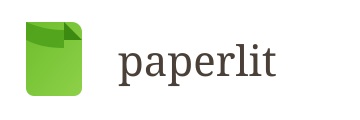

Bloomlabs
Incubazione, grant Sardegna Ricerche, primo investitore TNV, poi altri angel e VC. Round in chiusura da 4 milioni. Nata anche da C-Lab UniCa.
“TNV ci ha aiutato nei passaggi in cui una startup rischia di perdere tempo.”Silvio Piredda
Per startup
Non un programma standard. Consulenza, mentor, bandi, capitale — da dove sei adesso. Centinaia di startup ci sono già passate dal 2009.
Parlaci della tua startupCosa offriamo
Quanto serve dipende da dove siete: una startup pre-seed non ha bisogno delle stesse cose di una che sta chiudendo un round. È un servizio a pagamento, calibrato sul bisogno reale — non un pacchetto fisso uguale per tutti.
Coworking a Cagliari, una postazione quando serve, non un affitto fisso da subito.
Ore mirate su un problema preciso — prodotto, go-to-market, organizzazione — non un pacchetto standard che nessuno ha chiesto.
Fornitori, professionisti, altri founder della rete TNV. Con un motivo, non networking a caso.
Chi è già passato dalle vostre stesse decisioni, sul pezzo giusto al momento giusto.
Investimento diretto di TNV quando il fit c'è. Non l'unica leva, ma una reale.
Li cerchiamo attivamente con voi: non solo un'introduzione isolata, ma un processo.
Accesso e supporto sui bandi regionali in Sardegna, dalla candidatura alla rendicontazione.
Le prime assunzioni, con Agency e TechTalents: shortlist, colloqui, decisione.
Matching nella rete quando manca un socio, non solo un annuncio online.
Due esempi, non gli unici
Incubazione, grant Sardegna Ricerche, primo investitore TNV, poi altri angel e VC. Round in chiusura da 4 milioni. Nata anche da C-Lab UniCa.
“TNV ci ha aiutato nei passaggi in cui una startup rischia di perdere tempo.”Silvio Piredda

Incubata da TNV. Acquisita da Datrix, oggi parte di un gruppo quotato.
Scegliamo insieme quali dei nove servizi servono adesso, e cosa può aspettare.